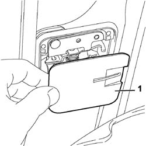
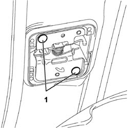
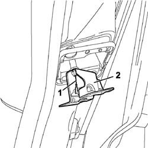

7020D52 DEVICE FOR LOCKING SLIDING SIDE DOOR WITH FUEL FLAP OPEN - R R OR REPAIR
- Path
- Procedures > 70 FITTINGS > 7020 LOAD COMPARTMENT DOORS > 7020D SLIDING SIDE DOOR CLOSURE DEVICES > 7020D52 DEVICE FOR LOCKING SLIDING SIDE DOOR WITH FUEL FLAP OPEN - R R OR REPAIR
- Kind
- repair procedure (removal / refitting; the operation number is the code)
- Applies to
- all engines; all production periods
- Interactive page
- https://sloeber94.github.io/elrnDB-fUlss/en/#/179007732
Applies to: all engines; all production periods
 Removing
Removing
 Refitting
Refitting- Carry out
Op. 7025C10 FUEL FILLER FLAP - R+R
- Open the sliding side door to the end of its travel.
1. Prise the sliding door lock guard from its seat.

Applies to: all engines; all production periods
1. Unscrew the bolts fixing the sliding door lock device.

Applies to: all engines; all production periods
1. Release the link terminal from the locking device. Prise up the rubber on the left rear wheel arch and remove the link from the fitting access flap compartment.
2. Remove the sliding side door lock.

Applies to: all engines; all production periods
Refitting
Removing- Position the link in its seat and connect to the sliding side door lock.
- Secure the lock with bolts.
- Fit the device guard in its seat.
- Close the sliding side door.
Op. 7025A10 BONNET LID - SQUARE COPERCHIO VANO MOTORE - RIQUADRATURA